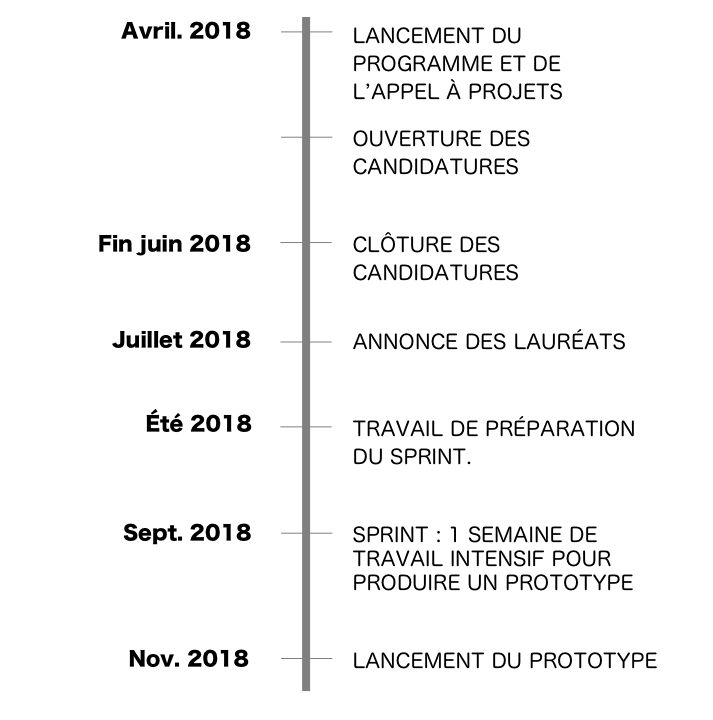

La première Conférence d’Afrique francophone sur les données ouvertes qui a eu lieu à Ouagadougou du 1er au 3 juin 2017 a rassemblé ce qu’il convient désormais d’appeler la Communauté d'Afrique francophone des données ouvertes (CAFDO). Cette communauté en plein essor a pour objectif de mieux partager les bonnes pratiques et de pérenniser les avancées et les engagements pris lors de la conférence.
Lors des ateliers de la conférence, le constat a été fait que l'accès et la formation aux outils numériques sont des obstacles importants au développement de projets utilisant l’open data (ouverture des données publiques), ces projets étant généralement considérés comme une première étape en matière d’accès au Gouvernement Ouvert.
Afin que les acteurs de la société civile collaborent avec les administrations de leurs pays et que demain des pays comme Madagascar, le Sénégal, la Guinée, le Togo, le Mali ou encore le Niger puisse rejoindre le Partenariat pour un gouvernement ouvert ou s'engager dans une stratégie politique forte d'ouverture de données, nous constatons qu’un chaînon est manquant. Comment rendre la technologie accessible ?
Quels logiciels choisir et comment les prendre en main ? Comment inventorier ce qui existe déjà et identifier les acteurs à qui parler ? Comment instaurer une relation avec l’administration en vue de libérer des données ? Dans quel format publier ces données et avec quelle licence ?
En réponse à ces problématiques concrètes, nous nous mettons au service de la communauté.
OGP Toolbox, en partenariat avec l'École des Données et avec le soutien de l’Agence française de développement, se propose d’accompagner les acteurs de la communauté pour mettre en oeuvre des projets pilotes en matière de gouvernement ouvert.
Il s'agit de venir compléter le travail d’animation du réseau CAFDO effectué par Open Burkina avec un accompagnement technique et des solutions concrètes. Dans une logique de mutualisation, il nous paraît en effet pertinent de concentrer notre action là où seront centralisés dorénavant les besoins exprimés par les membres de la communauté, et où par ailleurs, certains acteurs sont déjà très engagés.
Afin de maximiser les synergies au sein du réseau et développer l’impact de la coordination CAFDO, il apparait nécessaire d’organiser un soutien technique efficace, structuré et en cohérence avec l’offre existante, de consolider et d’améliorer la mise à disposition des ressources disponibles (supports de formation, etc.), et enfin de proposer un accompagnement de bout en bout pour les projets les plus prometteurs.
Notre initiative est axée sur l’outillage de la communauté open data en Afrique francophone, à travers l’accompagnement technique d’un projet pilote utilisant les données ouvertes dans un objectif de développement durable et/ou de gouvernance participative. Ce projet a vocation à servir de modèle dans la communauté open data francophone pour être repris, dupliqué et essaimé, en partageant au fil de l’eau les acquis engrangés pendant toute la période pilote.
Le projet sélectionné fera l’objet d’un accompagnement et d’un suivi de bout en bout dans les différentes étapes : étudier la faisabilité (contexte juridique et politique du pays, etc.), cartographier les acteurs, les contraintes, l’existant, inventorier les données, former des relations et des partenariats avec l’administration, les ONGs et les différentes communautés connexes.
Nous proposons un programme d'accompagnement technique d’un projet pilote utilisant les données ouvertes dans un objectif de développement durable et/ou de gouvernance participative.
Ce projet a vocation à servir de modèle dans la communauté open data francophone pour être repris, dupliqué et essaimé, en partageant au fil de l’eau les acquis engrangés pendant toute la période pilote.
L'appel à projets est ouvert dans un processus ouvert, comprenant un ensemble de critères tels que la pertinence de l'idée ou du projet, l'existence et la disponibilité de données, la transversalité possible, la dimension juridique (connaissance du cadre légal régissant le domaine choisi)...
Après évaluation des projets soumis à l'appel ouvert, le jury sélectionne un projet qui verra son prototype réalisé.
Pendant 2 mois, les experts techniques OGP Toolbox et l'équipe porteuse du projet lauréat travaillent à distance afin de préparer l'environnement technique nécessaire : nettoyage, structuration des données, production de mockups, réflexion sur le stockage des données et l'infrastructure nécessaire, etc.
Pendant une semaine, l'équipe porteuse du projet lauréat se réunit pour travailler avec les experts techniques OGP Toolbox afin de produire un prototype fonctionnel. De la documentation est traduite, voire produite en français, publiée et le prototype est mis en ligne.
Présentation du projet pilote, leçons apprises, techniques utilisées et essaimage au sein de la communauté.

Pendant une semaine, l'équipe portant le projet sélectionné sera invitée à retrouver des expert.es techniques dans un lieu propice et dédié au travail intensif, avec l'objectif de produire le prototype et toute la documentation nécessaire. Le lieu sera déterminé ultérieurement, une fois le projet sélectionné.
Cette expédition sera une combinaison de travail de groupe, de formation, d'apprentissage mutuel autour du traitement des données, de formalisation des besoins de documentation, de tutoriaux, et surtout du développement du prototype tel que défini pendant la période de préparation.
On peut voir le sprint comme une suite du datacamp initié lors de la première conférence CAFDO organisée à l'été 2017.
Tous les coûts relatifs au voyage, à l'hébergement et la nourriture durant le sprint seront couverts.
Le sprint aura lieu en Septembre 2018 (date et lieu à confirmer).
Vous pouvez également nous contacter par e-mail.
OGP Toolbox est une plateforme collaborative pour découvrir, utiliser et partager les outils pour un gouvernement ouvert. Les portails d’open data (ouverture des données publiques), plateformes de consultation citoyenne, outils pour co-créer la loi, forums de discussion, dispositifs pour suivre la mise en œuvre des plans d'action nationaux sont autant de solutions numériques pour promouvoir la transparence, la participation, la collaboration et améliorer ensemble notre démocratie.
Cette boîte à outils est conçue comme un réseau social donnant pour chaque outil des cas d’usage concrets, des fiches détaillées renseignées par la communauté et des recommandations sous forme de collections qui permettent de trouver la solution la mieux adaptée à chaque initiative de gouvernement ouvert et bénéficier de l'expérience des utilisateurs qui ont déjà mis en place des solutions existantes.
Nous recensons à ce jour plus de 1300 outils, 200 cas d’usage et 500 organisations partagés par la communauté depuis le lancement lors du sommet PGO en décembre 2016. Initialement développé au sein d’Etalab, la plateforme est portée par l’association OGP Toolbox depuis février 2017.
Cette association française qui a pour objectif le renforcement de capacités de la société civile en enseignant les compétences nécessaires à l’utilisation et la réutilisation des données, bénéficie non seulement d’une plateforme francophone à enrichir, mais aussi d’un véritable rayonnement international, puisqu’elle est membre du réseau School of Data, un projet d’Open Knowledge International,
Au fil des années de pratique, l’École des Données a mis en place une méthodologie d’apprentissage à la donnée au travers d’ateliers, mais aussi de modules de cours présentiels ou en ligne. L’École des Données s’appuie également sur un réseau de personnes disponibles à la formation sur différents aspects de l’open data : licences, standards, communs numériques, fondamentaux, etc.